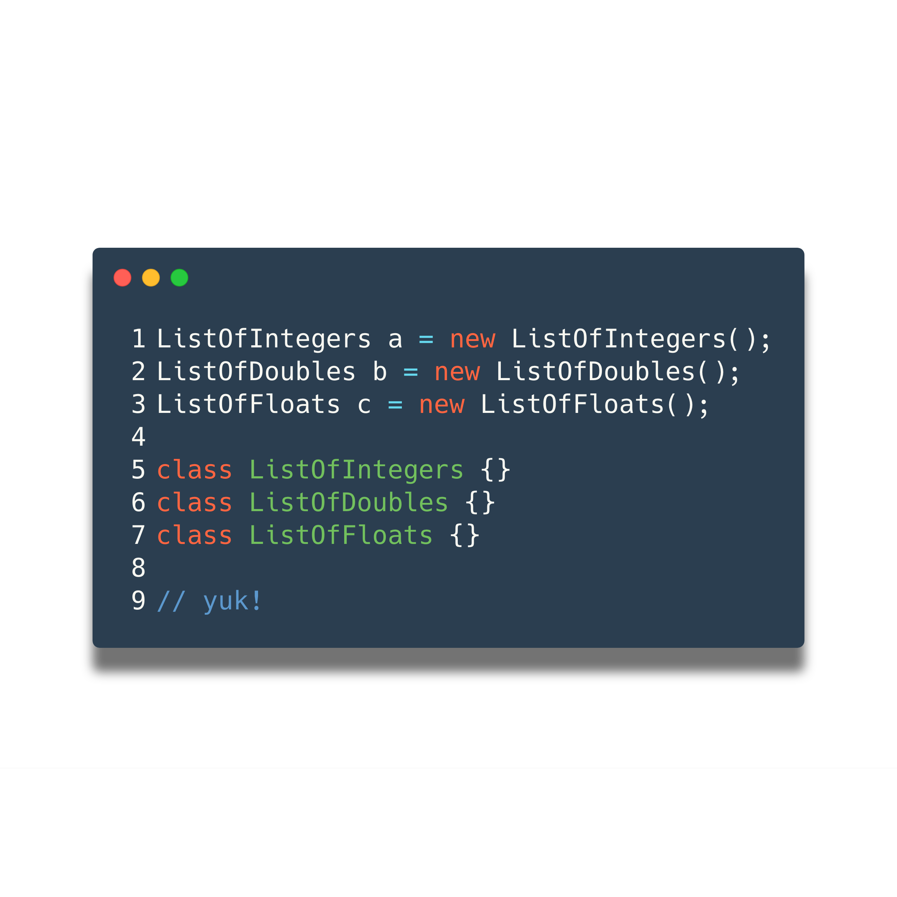
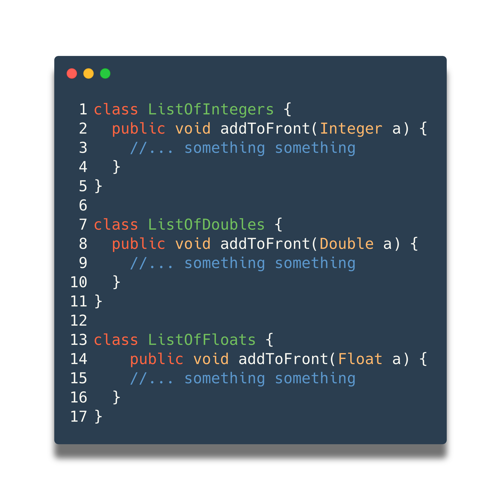
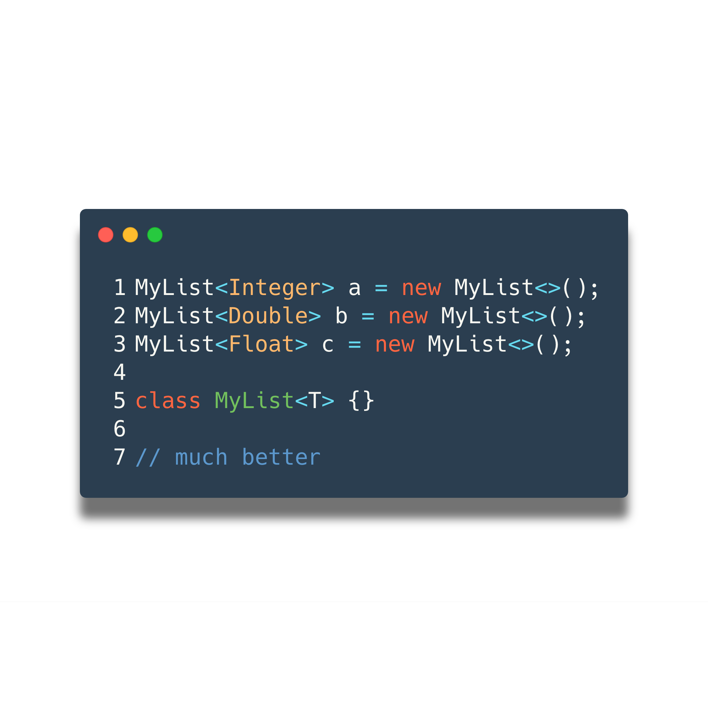
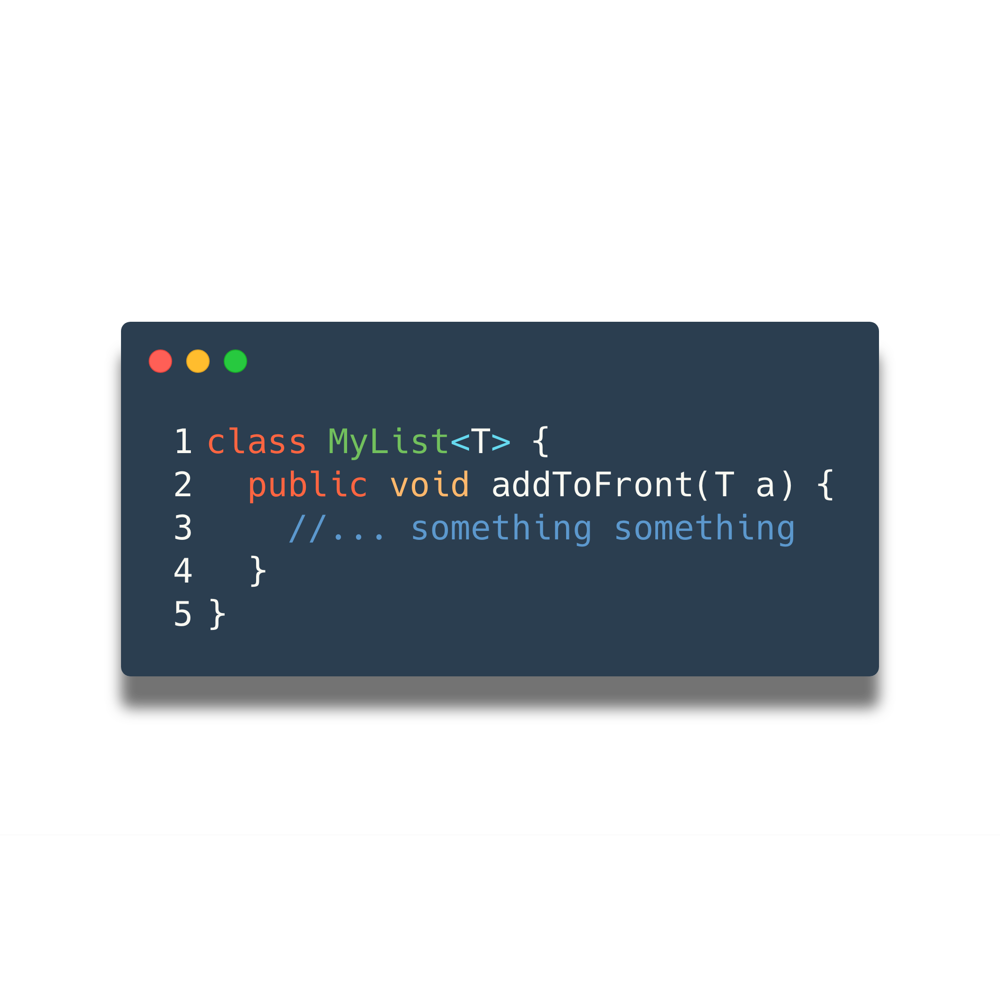
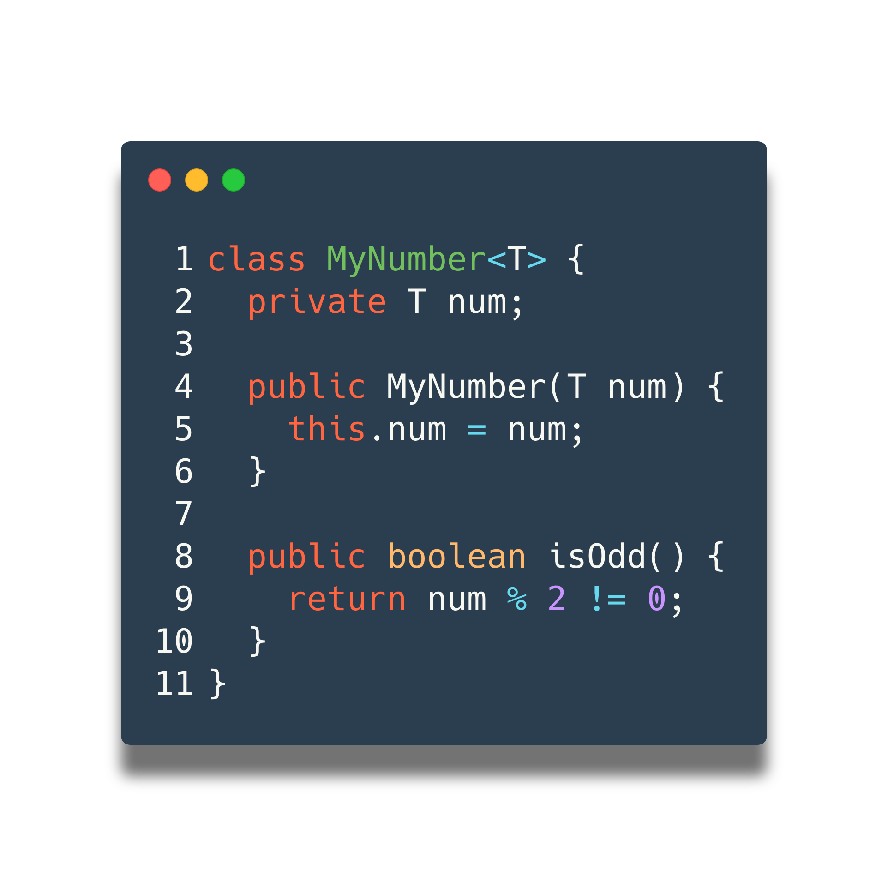
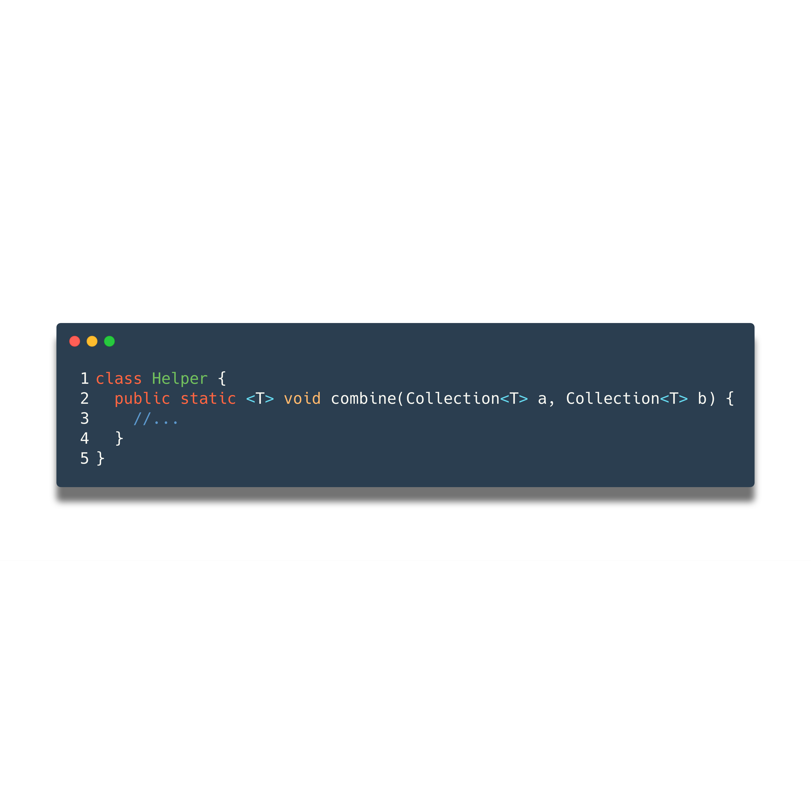
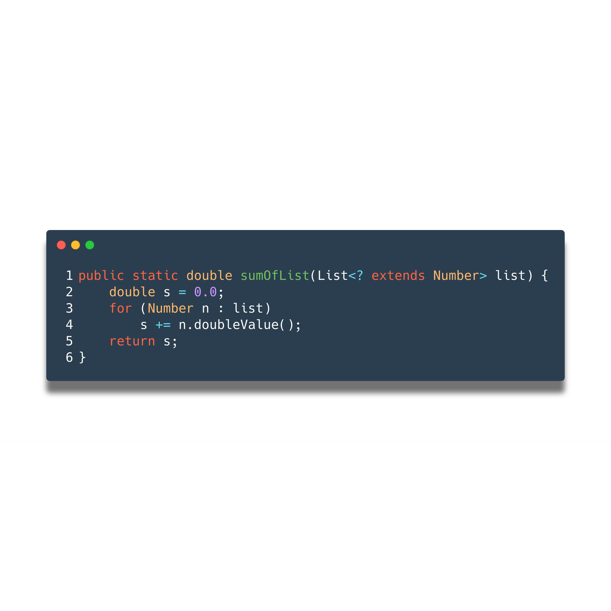
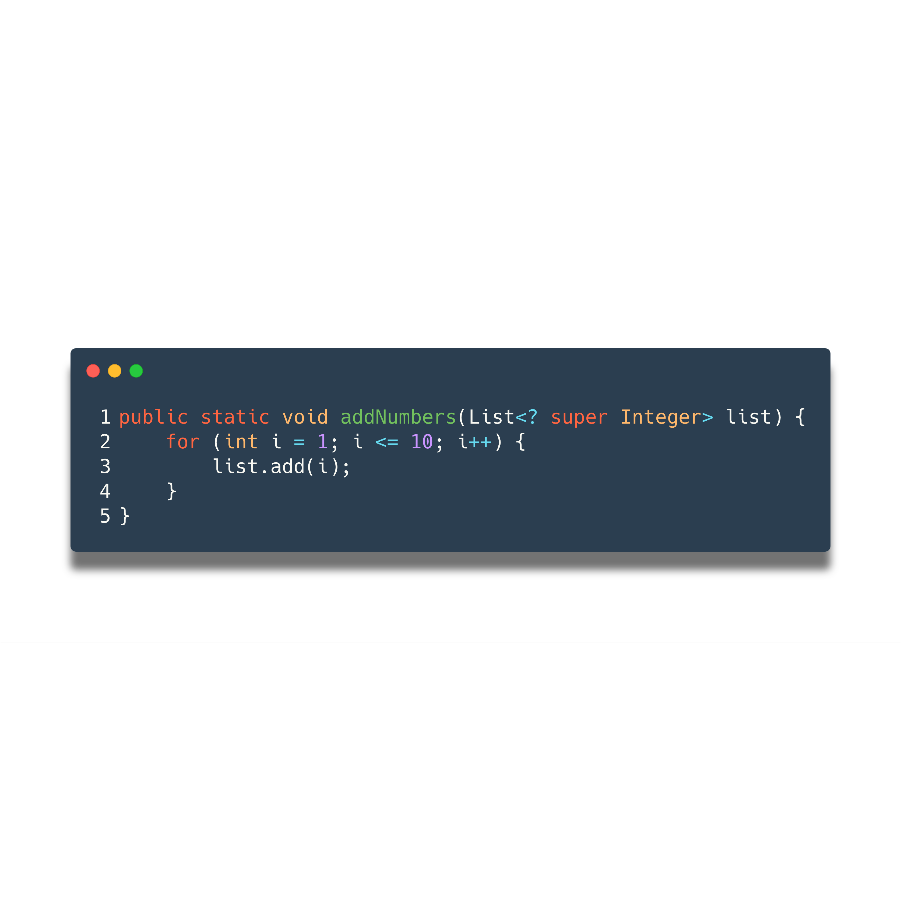

Generics 101
I hope you like this talk
I'm Ahmad
Cohort 4.1
CTO @ JPMC
JavaScript, Go, C
Generics???
Generics are hard to grasp
Bugs
They are always looking for a friend to hang out with
Not all bugs are created equal. Compile-time bugs are much friendlier than runtime bugs.
- Compile-time bugs are easier to detect early on.
- The compiler will tell you when and where a bug occurs.
- Runtime bugs will wait until 3 days after you push to prod before exploding.
- Then you are going to have to respond to 500+ support emails.
- You don't want to respond to 500+ support emails.
Okay, I get it.
But what do bugs have to do with generics?
Generics will save you from runtime bugs!
How?
Benefits to using generic code:
- Stronger type checks at compile time
- Elimination of casting
- Generic algorithms
- And much more...
Imagine we had a spoon that could be used for eating cereal, soup, or oatmeal.
It already exists!
Does it make sense to have a different spoon for each type?
NO
pls.
Bounded types

Generic Methods?
Wildcards
For when you don't exactly know, but sort of know, but not really
Upper bounded, lower bounded, and unbounded

This is as far as you need to go
buuuuuuttt
- Type erasure
- Wildcard capture and helper methods
- Bridge/Synthetic methods
- Non-reifiable types and heap pollution
- Generic restrictions
(okay... maybe you should look at generic restrictions)
Thanks!
github.com/woat